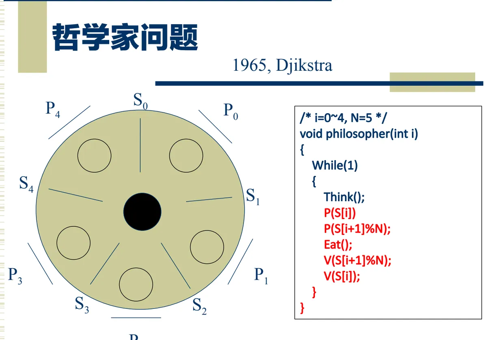

操作系统原理 · 第 5 章 资源分配与调度
5.6 死锁的检测与解除
预防和避免死锁都要求系统在分配资源时小心翼翼，代价是资源利用率下降、算法开销上升。还有第三条路：分配时什么都不管，但让系统定期「体检」一次，查出死锁再动手解除。这一节讲这条路上的两个问题——如何检测，以及检测到之后如何解除；最后用经典的哲学家进餐问题把死锁的各种办法串起来。
1. 死锁的检测与解除：另一种思路
除了死锁的预防和避免，解决死锁问题的另一条途径是死锁检测和解除。它的做法与前两条路正好相反：这种方法对资源的分配不加任何限制，也不采取死锁避免措施，但系统定时地运行一个「死锁检测」程序，判断系统内是否已出现死锁；如果检测到系统已经发生了死锁，再采取措施解除它。
三种策略的差别可以这样对照：预防是「事前把规则定死，让死锁不可能发生」；避免是「每次分配前算一算，不安全就不给」；检测与解除是「先用着，出了问题再治」。前两者牺牲并发性能换安全，后者换来的是资源的高利用率，代价是死锁真的发生时要有能力收拾局面。
2. 用资源分配图检测死锁
检测的工具就是 5.3 节画的进程-资源分配图。判据有三条：
- 如果进程-资源分配图无环路，则此时系统没有发生死锁；
- 如果有环路，且每个资源类中仅有一个资源，则系统中发生了死锁。此时环路是系统发生死锁的充要条件，环路中的进程便为死锁进程；
- 如果有环路，且涉及的资源类中有多个资源，则环路的存在只是产生死锁的必要条件而不是充分条件。
第二条与第三条的区分正是 5.3 节那个例子的结论（r1 有 1 个实例、r2 有 1 个实例、r3 有 2 个实例、r4 有 3 个实例）。原因也不难理解：资源有多个实例时，环上的进程未必都在等同一份资源，可能还有别的空闲实例可以周转，所以「有环」不足以断定死锁，还需要进一步判断资源数量是否真的周转不开。
3. 死锁的解除
一旦确认系统陷入死锁，就要把某些进程「请出去」或把资源「要回来」，让环断掉。课件给出的办法分三类。
（1）撤销进程
- 立即结束所有进程的执行，并重新启动操作系统。方法简单，但以前的工作全部作废，损失可能很大；
- 撤销陷于死锁的所有进程，解除死锁后继续运行；
- 逐个撤销陷于死锁的进程，回收其资源，直至死锁解除。这种办法比较温和，可以先撤代价最小的那个，看环是否已经断掉。
（2）剥夺资源
- 剥夺陷于死锁的进程占用的资源，但并不撤销它，直至死锁解除。进程还在，只是把它手里的资源收回来给别人，它之后再重新申请；
- 根据系统保存的 checkpoint，让所有进程回退，直到足以解除死锁。这就是「回滚」的思路：把系统退回到一个大家都还没卡住的时刻重新往前走；
- 当检测到死锁时，如果存在某些未卷入死锁的进程，而这些进程随着建立一些新的抑制进程能执行到结束，则它们可能释放足够的资源来解除死锁。
（3）忽略
还有一种不是办法的办法：死锁的忽略——人工干预，重启若干进程或整个系统。这在实际系统中并不罕见，因为死锁并不常发生，而预防、避免、检测的代价却是时时刻刻都在付出的。
4. 一个经典例子：哲学家进餐问题
1965 年 Dijkstra 提出的哲学家进餐问题，是死锁与同步问题最著名的模型。五个哲学家围坐在一张圆桌旁，桌上摆着五支叉子（信号灯 S0～S4，各自表示一支叉子是否可用），每位哲学家面前一支。哲学家的生活就是交替地思考和进餐，而进餐需要同时拿起左右两支叉子。

课件的程序描述如下（i = 0～4，N = 5，第 i 位哲学家的左右叉子分别是 S[i] 与 S[(i+1) % N]）：
/* i = 0~4, N = 5 */
void philosopher(int i)
{
while(1) {
Think();
P(S[i]); /* 拿左叉 */
P(S[(i + 1) % N]); /* 拿右叉 */
Eat();
V(S[(i + 1) % N]); /* 放右叉 */
V(S[i]); /* 放左叉 */
}
}这段程序的问题一眼就能看出：如果五位哲学家同时感到饥饿，都执行了第一句 P(S[i])，那么每人手里都拿到了一支叉子，又都在等右边那支——而右叉正握在邻座手里。这正是 5.3 节说的环路条件：五个进程首尾相接构成循环等待，谁也不肯放手，系统死锁。
要避免这种局面，就要破坏「每个人都先拿左叉」这个前提，例如规定拿叉子的次序（对应 5.4 节的有序资源分配法）、限制同时进餐的人数、或者一次性申请两支叉子。可见一个看似生活化的小问题，涵盖的正是本章的全部主题：互斥、同步、死锁的四个必要条件，以及预防、避免、检测解除这三条对策。
本节小结
- 死锁检测与解除对资源分配不加限制，也不做避免，而是由系统定时运行检测程序，发现死锁后再解除；它换来高资源利用率，代价是必须有能力收拾死锁；
- 检测工具是进程-资源分配图：无环则无死锁；有环且每个资源类只有一个资源，则环路是死锁的充要条件；有环且资源类有多个资源时，环路只是必要条件；
- 解除死锁可以从三方面下手：撤销进程（全部结束并重启、撤销所有死锁进程、逐个撤销）、剥夺资源（强行收回、按 checkpoint 回退、借助未卷入死锁的进程释放资源）以及忽略（人工干预、重启进程或系统）；
- 哲学家进餐问题（1965，Dijkstra）中，五位哲学家与五支叉子构成典型的循环等待：同时拿起左叉就会全部阻塞；
- 本章的对策可以按「事前—事中—事后」来记：预防破坏必要条件（5.4 节）、避免在分配前试算安全性（5.5 节银行家算法）、检测与解除则在事后收拾（本节）。